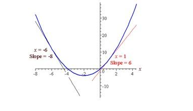

Derivative Basics
The slope of a curve y = f(x) at the point P means the slope of the tangent at the point P. We need to find this slope to solve many applications since it tells us the rate of change at a particular instant.
We write y = f(x) on the curve since y is a function of x. That is, as x varies, y also varies.
Delta Notation
In this notation, we denote
change in y as Δy
change in x as Δx
By definition, the slope is given by:
Using the above formula, we can find the slope of a curve.
Example 1: Find the slope of the curve y = x2 at the point (2,4).
Solution : We start with a point Q(1, 1) which is near P(2,4):

The slope of PQ is given by:
m = (y2-y1)/(x2-x1) = (4-1)/(2-1) = 3
Now we move Q further around the curve so it is closer to P. Let's use Q(1.5,2.25) which is closer to P(2,4):
The slope of PQ is now given by:
m = (y2-y1)/(x2-x1) = (4-2.25)/(2-1.5) = 3.5
We see that this is already a pretty good approximation to the tangent at P, but not good enough.
Now we move Q even closer to P, say Q(1.9,3.61).
Now we have:
So m = (y2-y1)/(x2-x1) = (4-3.61)/(2-1.9) = 3.9
We can see that we are very close to the required slope.
Now if Q is moved to (1.99,3.9601), then slope PQ is 3.99.
If Q is (1.999,3.996001), then the slope is 3.999.
Clearly, as x → 2, the slope of PQ → 4. But notice that we cannot actually let x = 2, since the fraction for m would have 0 on the bottom, and so it would be undefined.
We have found that the rate of change of y with respect to x is 4 units at the point x = 2.
Definition
The derivative of f(x) with respect to x is the function f ’(x) and is defined as ……………….(1)
We often read f ‘(x) as “f prime of x” and f ‘(x) =dy/dx
Moreover
Equation (1) gives the instantaneous rate of change of y with respect to x.
This is equivalent to the following (where before we were using h for Δx):
We will also come across the following for delta method:
Notation for the Derivative
IMPORTANT: The derivative (also called differentiation) can be written in several ways. This can cause some confusion when we first learn about differentiation.
The following are equivalent ways of writing the first derivative of y = f(x):
dy/dx = f ’(x) = y’
Example 2: Find dy/dx using delta method (or definition) if y = 2x2+ 3x
Solution:
f(x) = y = 2x2+ 3x, so
f(x + h)
= 2(x + h)2 + 3(x + h)
=2(x2 + 2xh + h2) + 3x + 3h
=2x2 + 4xh + 2h2 + 3x + 3h
We now need to find: dy/dx
We have found an expression that can give us the slope of the tangent anywhere on the curve.
If x = -2, the slope is 4(-2) + 3 = -5 (red, in the graph below)
If x = 1, the slope is 4(1) + 3 = 7 (green)
If x = 4, the slope is 4(4) + 3 = 19 (black)
We can observe that our manipulations are correct when we graph the curve which is a parabola in shape and observe the slopes of the tangents.
This is what makes calculus so powerful. We can find the slope anywhere on the curve (i.e. the rate of change of the function anywhere).
Example 3:
a. Find y' for y = x2 + 4x.
b. Find the slope of the tangent where x = 1 and also where x = -6.
c. Sketch the curve and both tangents.
Solution:
a. Note: y' means "the first derivative". This can also be written as dy/dx.
for f(x) = x2 + 4x we have:
f(x + h) = (x + h)2 + 4(x + h)
= x2 + 2xh + h2 + 4x + 4h
So
b. When x = 1, m = 2(1) + 4 = 6
When x = -6, m = 2(-6) + 4 = -8
c. Sketch:
